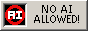
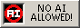

Windows Error Generators
---Websites---
Barra's Error Message Generator (https://barrarchiverio.cl/p/error/)
Barra's Error Generator can create Error messages themed from various OS'es like Windows 9x, XP, Vista/7, and Windows 11. Theres various Icons you can put in the error message aswell, you can change the title bar color, button style, and various other things. This is the most known Error generator of them all. This Error Generator is inspired by the now down Atom Smasher's Error Message Generator (rip)
Window Creator (https://relt-1.github.io/app/)
Window Creator can make Windows error messages like Barra's, but it also creates error boxes from older OS'es and even Ubuntu 10.04, you can put in your own Error icon aswell. It cannot create Windows 10/11 Error Messages.
BSoD maker https://bsodmaker.net/
This Generator can create fake Windows 10/11 (21h2 -> 23h2) BSoD's. You can change basically everything (except for the background color)
Editable Fake Error Screens (https://www.ravbug.com/bsod/)
This Generator can create Windows 7 BSod's, Windows 7 Boot Failure screens, Windows 8 BSoD's, Windows 10/11 (21h2 -> 23h2) BSoD's, and Insider Preview BSoD's. Once again, you can change basically everything about them except for the background color. One downside is that there is some inaccuracies to sizing and placements.
winerr (https://shikoshib.ru/tools/winerr)
This Generator can create error messages from Windows 1.0 to Windows 11, and even beta builds of Windows like Longhorn. Depending on what OS you choose, theres a very good selection of Icons to choose from, and you can even change the titlebar color, and frame color. This Windows error generator is a hidden gem.
---Programs---
Dialog Creator (GitHub)
This Generator created by KorbynTalks (me!) is great for creating Errors, but it can also be used to create Task Dialog Boxes with a lot of customizability. You can even make the buttons do certain things! Like executing a cmd command, or opening a website. I do not plan on updating this Application anytime soon though.
Modern Windows Message Box Generator (GitHub)
This Error Generator can create a type of Error Message in Windows that existed since Windows Vista called "Task Dialog Boxes", a more Modern replacement of the original Message Box that we all know and love. These can be made to create convincing looking Windows Defender/Firewall Messages. You can also put in custom Icons in your messages aswell.
ErrorGen (https://www.kirsle.net/errorgen)
a Error Generator thats existed since 2006, this Generator can create Classic Error Messages. You can select from 72 different Icons, and your own Icon if you use the Command Line Interface. You can also configure up to 3 buttons for your Error Message. This Error Generator is inspired by the now down Atom Smasher's Error Message Generator (rip)
Bluescreen Simulator (GitHub)
Note: This might be falsly flagged by your antivirus, this program is safe to use! This Generator creates very believable fake Windows 10/11 (21h2 -> 23h2) BSoD's on your screen, dont worry these are not actual BSoD's, just a fullscreen window, all you have to do to get rid of it is by pressing F7 or Fn + F7. You can change the background color, text color, emoticon, and the text itself.
 
